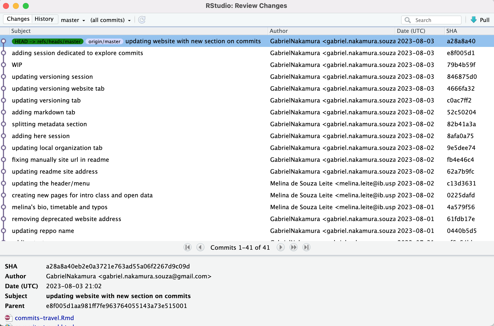
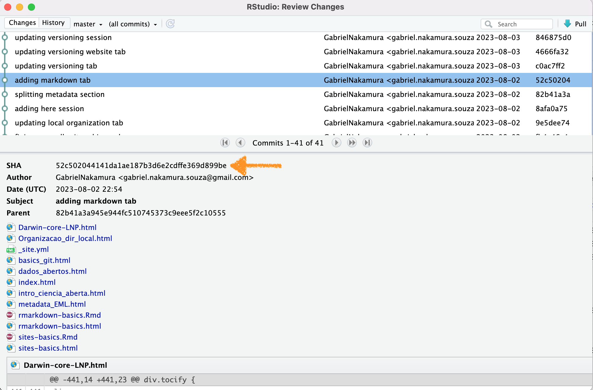
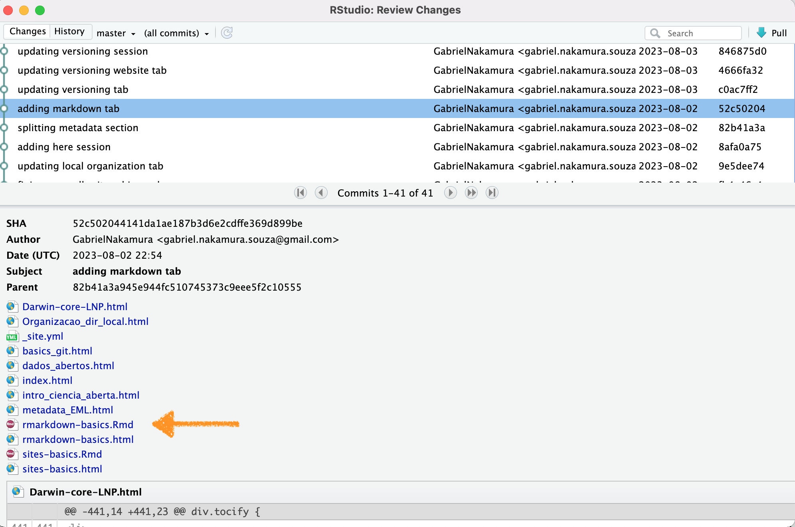

Apresentação
Nesta seção iremos explorar um pouco mais o poder que os commits nos
oferecem, incluindo boas práticas para fazer commits nos nossos arquivos
e como “viajar” entre commits passados e presente. Este momento também
servirá para ficarmos um pouco mais familiarizados com o uso do git
através do terminal. Vamos utilizar o teminal visto que algumas coisas
que faremos aqui não podem ser feitas através do RStudio.
Sempre ao fazer commits vale lembrar essas palavras:

Workflow para os commits
Em primeiro lugar sempre cheque se está tudo certo com seu
repositório, se seu trabalho local está sincronizado com seu trabalho
remoto. Para tanto pode digitar na linha de comando do terminal
Se sua working tree estiver no status clean, quer
dizer que você está sincronizada com o origin
Faça algumas modificações e depois vamos fazer a mesma sequencia de
ações que fizemos anteriormente (stage, commit, push), mas agora usando
a linha de comando. Para tanto podemos fazer assim
git add .
git commit -m "uma mensagem informativa"
git push
Pronto, fizemos a mesma coisa que anteriormente, mas agora utilizando
o terminal :)
Amend
Lembra que muitos commits podem te deixar muito lento na escalada? E
poucos commits podem ser pouco informativos caso queira reconstruir o
que aconteceu com o repositório? Pois então, existe uma estratégia
interessante para realizar commits, chamada de amend
Em um amend nós basicamente adicionamos um commit a um outro já
existente. Por exemplo, imagine que fez apenas algumas poucas
modificações de código que não necessitam necessariamente de um commit
dedicada exclusivamente para tais, você pode fazer o seguinte:
1 - stage o arquivo que modificou
2 - faça um commit
Note que coloquei WIP neste commit, por que? WIP é
uma sigla usada comumente no versionamente para Working In Progress.
Sempre que tiver um commit desse quer dizer que o commit que fez ainda
está sendo trabalhado.
Ainda não faça o push. Faça mais algumas modificações, e, digamos que
agora fez modificações relevantes no código que merecem um commit
dedicado. Mas lembre-se que o último commit é um WIP. O que fazemos
agora é um amend ao WIP
3 - faça um amend
git commit --amend -m "Aqui um commit com uma mensagem informativa, como sempre"
git push
Pronto, agora temos uma mensagem informativa que foi adicionada ao
WIP e não precisamos fazer um push do passo intermediário (WIP),
deixando nossa escalada mais rápida
Viajando entre commits
Uma das maiores potencialidades dos commits é a possibilidade que
podemos navegar entre commits. Ou seja, podemos navegar entre estados
distintos do nosso trabalho a medida que ele é desenvolvido. Podemos
checar esse histórico tanto na nossa página do repositório no GitHub
quanto usando o RStudio, como mostrado na imagem a seguir

Para tanto você precisa apenas abrir a aba do Git no RStudio, como
vimos anteriormente, e clicar em History no canto
superior esquerdo da janela de revisões. Tudo o que vemos são todos os
commits que foram realizados desde que esse repositório foi formado pela
primeira vez.
Elementos importantes do commit
Alguns elementos presentes no commit são importantes. O principal
deles é a chave SHA-1. Esta se trata de um identificador único do
commit. Com ela podemos viajar entre commits, ou referenciar um dado
commit em uma discussão no github. Por exemplo, supondo que estamos
trabalhando colaborativamente (como nesse site :)), e eu gostei
particularmente mais da versão do site que está há alguns commits atrás.
Uma opção é abrir uma Issue (veremos isso mais tarde), e referenciar
esse número. Ou simplesmente dizer para meu colaborador “Hey dê uma
olhada no commit número XXXXXX”. Na imagem abaixo está em destaque a
chave SHA.

Você pode abrir o arquivo no estado em que ele se encontrava em um
dado commit clicando no arquivo modificado naquele commit selecionado.
Por exemplo, digamos que eu queira ver o arquivo chamado
rmarkdown-basics deste site editado dia 02 de Agosto, só
precisamos clicar no arquivo, como mostrado na imagem abaixo:

Atividade
Explore um pouco os commits que realizaram. Abra a página do github e
também através do Rstudio, veja as diferenças, as vantangens e
desvantagens de cada uma das abordagens
Throwback Commit
Vamos supor que realizamos um commit errado, e agora queremos voltar
ao commit anterior, mas sem perder o trabalho que fizemos nos arquivos.
Para isso podemos usar a abordagem anterior, navegando entre os arquivos
e selecionando o arquivo que queremos em um determinado estado,
substituimos pelo arquivo atual e fazemos um novo commit. Esta opção
pode ser a mais segura se estamos começando a mexer no versionamento.
Outra opção é explorar as funções do git chamadas reset. As
funções reset basicamente move o HEAD do seu diretório para um commit no
passado. Esta abordagem pode causar algumas dores de cabeça no início,
portanto recomendo usa-lá com cautela. Para mais informações sobre isso
dê uma olhada nesse
site.)
LS0tCnRpdGxlOiAnRXhwbG9yYW5kbyBtZWxob3Igb3MgY29tbWl0cycKYXV0aG9yOiAiR2FicmllbCBOYWthbXVyYSIKZGF0ZTogImByIFN5cy5EYXRlKClgIgpvdXRwdXQ6IGh0bWxfZG9jdW1lbnQKLS0tCgpgYGB7ciBzZXR1cCwgaW5jbHVkZT1GQUxTRX0Ka25pdHI6Om9wdHNfY2h1bmskc2V0KGVjaG8gPSBUUlVFLCBmaWcuYWxpZ24gPSAiY2VudGVyIikKYGBgCgpgYGB7ciBrbGlwcHksIGVjaG89RkFMU0UsIGluY2x1ZGU9VFJVRX0Ka2xpcHB5OjprbGlwcHkoKQpgYGAKCiMgQXByZXNlbnRhw6fDo28KCk5lc3RhIHNlw6fDo28gaXJlbW9zIGV4cGxvcmFyIHVtIHBvdWNvIG1haXMgbyBwb2RlciBxdWUgb3MgY29tbWl0cyBub3Mgb2ZlcmVjZW0sIGluY2x1aW5kbyBib2FzIHByw6F0aWNhcyBwYXJhIGZhemVyIGNvbW1pdHMgbm9zIG5vc3NvcyBhcnF1aXZvcyBlIGNvbW8gInZpYWphciIgZW50cmUgY29tbWl0cyBwYXNzYWRvcyBlIHByZXNlbnRlLiBFc3RlIG1vbWVudG8gdGFtYsOpbSBzZXJ2aXLDoSBwYXJhIGZpY2FybW9zIHVtIHBvdWNvIG1haXMgZmFtaWxpYXJpemFkb3MgY29tIG8gdXNvIGRvIGdpdCBhdHJhdsOpcyBkbyB0ZXJtaW5hbC4gVmFtb3MgdXRpbGl6YXIgbyB0ZW1pbmFsIHZpc3RvIHF1ZSBhbGd1bWFzIGNvaXNhcyBxdWUgZmFyZW1vcyBhcXVpIG7Do28gcG9kZW0gc2VyIGZlaXRhcyBhdHJhdsOpcyBkbyBSU3R1ZGlvLgoKU2VtcHJlIGFvIGZhemVyIGNvbW1pdHMgdmFsZSBsZW1icmFyIGVzc2FzIHBhbGF2cmFzOgoKYGBge3IgZWNobz1GQUxTRSwgZXZhbD1UUlVFLG91dC53aWR0aD0iNzAlIn0Ka25pdHI6OmluY2x1ZGVfZ3JhcGhpY3MoaGVyZTo6aGVyZSgiZmlncyIsICJjb21taXQtc2FmZS5wbmciKSkKYGBgCgojIFdvcmtmbG93IHBhcmEgb3MgY29tbWl0cyAKCkVtIHByaW1laXJvIGx1Z2FyIHNlbXByZSBjaGVxdWUgc2UgZXN0w6EgdHVkbyBjZXJ0byBjb20gc2V1IHJlcG9zaXTDs3Jpbywgc2Ugc2V1IHRyYWJhbGhvIGxvY2FsIGVzdMOhIHNpbmNyb25pemFkbyBjb20gc2V1IHRyYWJhbGhvIHJlbW90by4gUGFyYSB0YW50byBwb2RlIGRpZ2l0YXIgbmEgbGluaGEgZGUgY29tYW5kbyBkbyB0ZXJtaW5hbAoKYGBge3IgZWNobz1ULGV2YWw9RkFMU0V9CmdpdCBzdGF0dXMKYGBgCgpTZSBzdWEgKndvcmtpbmcgdHJlZSogZXN0aXZlciBubyBzdGF0dXMgKmNsZWFuKiwgcXVlciBkaXplciBxdWUgdm9jw6ogZXN0w6Egc2luY3Jvbml6YWRhIGNvbSBvICpvcmlnaW4qCgpGYcOnYSBhbGd1bWFzIG1vZGlmaWNhw6fDtWVzIGUgZGVwb2lzIHZhbW9zIGZhemVyIGEgbWVzbWEgc2VxdWVuY2lhIGRlIGHDp8O1ZXMgcXVlIGZpemVtb3MgYW50ZXJpb3JtZW50ZSAoc3RhZ2UsIGNvbW1pdCwgcHVzaCksIG1hcyBhZ29yYSB1c2FuZG8gYSBsaW5oYSBkZSBjb21hbmRvLiBQYXJhIHRhbnRvIHBvZGVtb3MgZmF6ZXIgYXNzaW0KCmBgYHtyIGVjaG89VFJVRSxldmFsPUZBTFNFfQpnaXQgYWRkIC4KZ2l0IGNvbW1pdCAtbSAidW1hIG1lbnNhZ2VtIGluZm9ybWF0aXZhIgpnaXQgcHVzaApgYGAKClByb250bywgZml6ZW1vcyBhIG1lc21hIGNvaXNhIHF1ZSBhbnRlcmlvcm1lbnRlLCBtYXMgYWdvcmEgdXRpbGl6YW5kbyBvIHRlcm1pbmFsIDopCgojIyBBbWVuZAoKTGVtYnJhIHF1ZSBtdWl0b3MgY29tbWl0cyBwb2RlbSB0ZSBkZWl4YXIgbXVpdG8gbGVudG8gbmEgZXNjYWxhZGE/IEUgcG91Y29zIGNvbW1pdHMgcG9kZW0gc2VyIHBvdWNvIGluZm9ybWF0aXZvcyBjYXNvIHF1ZWlyYSByZWNvbnN0cnVpciBvIHF1ZSBhY29udGVjZXUgY29tIG8gcmVwb3NpdMOzcmlvPyBQb2lzIGVudMOjbywgZXhpc3RlIHVtYSBlc3RyYXTDqWdpYSBpbnRlcmVzc2FudGUgcGFyYSByZWFsaXphciBjb21taXRzLCBjaGFtYWRhIGRlIGBhbWVuZGAKCkVtIHVtIGFtZW5kIG7Ds3MgYmFzaWNhbWVudGUgYWRpY2lvbmFtb3MgdW0gY29tbWl0IGEgdW0gb3V0cm8gasOhIGV4aXN0ZW50ZS4gUG9yIGV4ZW1wbG8sIGltYWdpbmUgcXVlIGZleiBhcGVuYXMgYWxndW1hcyBwb3VjYXMgbW9kaWZpY2HDp8O1ZXMgZGUgY8OzZGlnbyBxdWUgbsOjbyBuZWNlc3NpdGFtIG5lY2Vzc2FyaWFtZW50ZSBkZSB1bSBjb21taXQgZGVkaWNhZGEgZXhjbHVzaXZhbWVudGUgcGFyYSB0YWlzLCB2b2PDqiBwb2RlIGZhemVyIG8gc2VndWludGU6CgoxIC0gc3RhZ2UgbyBhcnF1aXZvIHF1ZSBtb2RpZmljb3UKCmBgYHtyIGVjaG89VFJVRSxldmFsPUZBTFNFfQpnaXQgYWRkIHBhdGgvdG8vZmlsZQpgYGAKCjIgLSBmYcOnYSB1bSBjb21taXQgCgpgYGB7ciBlY2hvPVRSVUUsZXZhbD1GQUxTRX0KZ2l0IGNvbW1pdCAtbSAiV0lQIgpgYGAKCk5vdGUgcXVlIGNvbG9xdWVpICoqV0lQKiogbmVzdGUgY29tbWl0LCBwb3IgcXVlPyBXSVAgw6kgdW1hIHNpZ2xhIHVzYWRhIGNvbXVtZW50ZSBubyB2ZXJzaW9uYW1lbnRlIHBhcmEgV29ya2luZyBJbiBQcm9ncmVzcy4gU2VtcHJlIHF1ZSB0aXZlciB1bSBjb21taXQgZGVzc2UgcXVlciBkaXplciBxdWUgbyBjb21taXQgcXVlIGZleiBhaW5kYSBlc3TDoSBzZW5kbyB0cmFiYWxoYWRvLgoKQWluZGEgbsOjbyBmYcOnYSBvIHB1c2guIEZhw6dhIG1haXMgYWxndW1hcyBtb2RpZmljYcOnw7VlcywgZSwgZGlnYW1vcyBxdWUgYWdvcmEgZmV6IG1vZGlmaWNhw6fDtWVzIHJlbGV2YW50ZXMgbm8gY8OzZGlnbyBxdWUgbWVyZWNlbSB1bSBjb21taXQgZGVkaWNhZG8uIE1hcyBsZW1icmUtc2UgcXVlIG8gw7psdGltbyBjb21taXQgw6kgdW0gV0lQLiBPIHF1ZSBmYXplbW9zIGFnb3JhIMOpIHVtIGFtZW5kIGFvIFdJUAoKMyAtIGZhw6dhIHVtIGFtZW5kCgpgYGB7ciBlY2hvPVRSVUUsZXZhbD1GQUxTRX0KZ2l0IGNvbW1pdCAtLWFtZW5kIC1tICJBcXVpIHVtIGNvbW1pdCBjb20gdW1hIG1lbnNhZ2VtIGluZm9ybWF0aXZhLCBjb21vIHNlbXByZSIKZ2l0IHB1c2gKYGBgCgpQcm9udG8sIGFnb3JhIHRlbW9zIHVtYSBtZW5zYWdlbSBpbmZvcm1hdGl2YSBxdWUgZm9pIGFkaWNpb25hZGEgYW8gV0lQIGUgbsOjbyBwcmVjaXNhbW9zIGZhemVyIHVtIHB1c2ggZG8gcGFzc28gaW50ZXJtZWRpw6FyaW8gKFdJUCksIGRlaXhhbmRvIG5vc3NhIGVzY2FsYWRhIG1haXMgcsOhcGlkYQoKIyMgVmlhamFuZG8gZW50cmUgY29tbWl0cwoKVW1hIGRhcyBtYWlvcmVzIHBvdGVuY2lhbGlkYWRlcyBkb3MgY29tbWl0cyDDqSBhIHBvc3NpYmlsaWRhZGUgcXVlIHBvZGVtb3MgbmF2ZWdhciBlbnRyZSBjb21taXRzLiBPdSBzZWphLCBwb2RlbW9zIG5hdmVnYXIgZW50cmUgZXN0YWRvcyBkaXN0aW50b3MgZG8gbm9zc28gdHJhYmFsaG8gYSBtZWRpZGEgcXVlIGVsZSDDqSBkZXNlbnZvbHZpZG8uIFBvZGVtb3MgY2hlY2FyIGVzc2UgaGlzdMOzcmljbyB0YW50byBuYSBub3NzYSBww6FnaW5hIGRvIHJlcG9zaXTDs3JpbyBubyBHaXRIdWIgcXVhbnRvIHVzYW5kbyBvIFJTdHVkaW8sIGNvbW8gbW9zdHJhZG8gbmEgaW1hZ2VtIGEgc2VndWlyCgpgYGB7ciBlY2hvPUZBTFNFLCBldmFsPVRSVUUsb3V0LndpZHRoPSI3MCUifQprbml0cjo6aW5jbHVkZV9ncmFwaGljcyhoZXJlOjpoZXJlKCJmaWdzIiwgImdpdGh1Yi1oaXN0b3J5LnBuZyIpKQpgYGAKClBhcmEgdGFudG8gdm9jw6ogcHJlY2lzYSBhcGVuYXMgYWJyaXIgYSBhYmEgZG8gR2l0IG5vIFJTdHVkaW8sIGNvbW8gdmltb3MgYW50ZXJpb3JtZW50ZSwgZSBjbGljYXIgZW0gKipIaXN0b3J5Kiogbm8gY2FudG8gc3VwZXJpb3IgZXNxdWVyZG8gZGEgamFuZWxhIGRlIHJldmlzw7Vlcy4gVHVkbyBvIHF1ZSB2ZW1vcyBzw6NvIHRvZG9zIG9zIGNvbW1pdHMgcXVlIGZvcmFtIHJlYWxpemFkb3MgZGVzZGUgcXVlIGVzc2UgcmVwb3NpdMOzcmlvIGZvaSBmb3JtYWRvIHBlbGEgcHJpbWVpcmEgdmV6LgoKIyMgRWxlbWVudG9zIGltcG9ydGFudGVzIGRvIGNvbW1pdAoKQWxndW5zIGVsZW1lbnRvcyBwcmVzZW50ZXMgbm8gY29tbWl0IHPDo28gaW1wb3J0YW50ZXMuIE8gcHJpbmNpcGFsIGRlbGVzIMOpIGEgY2hhdmUgU0hBLTEuIEVzdGEgc2UgdHJhdGEgZGUgdW0gaWRlbnRpZmljYWRvciDDum5pY28gZG8gY29tbWl0LiBDb20gZWxhIHBvZGVtb3MgdmlhamFyIGVudHJlIGNvbW1pdHMsIG91IHJlZmVyZW5jaWFyIHVtIGRhZG8gY29tbWl0IGVtIHVtYSBkaXNjdXNzw6NvIG5vIGdpdGh1Yi4gUG9yIGV4ZW1wbG8sIHN1cG9uZG8gcXVlIGVzdGFtb3MgdHJhYmFsaGFuZG8gY29sYWJvcmF0aXZhbWVudGUgKGNvbW8gbmVzc2Ugc2l0ZSA6KSksIGUgZXUgZ29zdGVpIHBhcnRpY3VsYXJtZW50ZSBtYWlzIGRhIHZlcnPDo28gZG8gc2l0ZSBxdWUgZXN0w6EgaMOhIGFsZ3VucyBjb21taXRzIGF0csOhcy4gVW1hIG9ww6fDo28gw6kgYWJyaXIgdW1hIElzc3VlICh2ZXJlbW9zIGlzc28gbWFpcyB0YXJkZSksIGUgcmVmZXJlbmNpYXIgZXNzZSBuw7ptZXJvLiBPdSBzaW1wbGVzbWVudGUgZGl6ZXIgcGFyYSBtZXUgY29sYWJvcmFkb3IgIkhleSBkw6ogdW1hIG9saGFkYSBubyBjb21taXQgbsO6bWVybyBYWFhYWFgiLiBOYSBpbWFnZW0gYWJhaXhvIGVzdMOhIGVtIGRlc3RhcXVlIGEgY2hhdmUgU0hBLgoKYGBge3IgZWNobz1GQUxTRSwgZXZhbD1UUlVFLG91dC53aWR0aD0iNzAlIn0Ka25pdHI6OmluY2x1ZGVfZ3JhcGhpY3MoaGVyZTo6aGVyZSgiZmlncyIsICJnaXQtc2hhLWtleS5wbmciKSkKYGBgCgpWb2PDqiBwb2RlIGFicmlyIG8gYXJxdWl2byBubyBlc3RhZG8gZW0gcXVlIGVsZSBzZSBlbmNvbnRyYXZhIGVtIHVtIGRhZG8gY29tbWl0IGNsaWNhbmRvIG5vIGFycXVpdm8gbW9kaWZpY2FkbyBuYXF1ZWxlIGNvbW1pdCBzZWxlY2lvbmFkby4gUG9yIGV4ZW1wbG8sIGRpZ2Ftb3MgcXVlIGV1IHF1ZWlyYSB2ZXIgbyBhcnF1aXZvIGNoYW1hZG8gYHJtYXJrZG93bi1iYXNpY3NgIGRlc3RlIHNpdGUgZWRpdGFkbyBkaWEgMDIgZGUgQWdvc3RvLCBzw7MgcHJlY2lzYW1vcyBjbGljYXIgbm8gYXJxdWl2bywgY29tbyBtb3N0cmFkbyBuYSBpbWFnZW0gYWJhaXhvOgoKYGBge3IgZWNobz1GQUxTRSwgZXZhbD1UUlVFLG91dC53aWR0aD0iNzAlIn0Ka25pdHI6OmluY2x1ZGVfZ3JhcGhpY3MoaGVyZTo6aGVyZSgiZmlncyIsICJnaXQtaGlzdG9yeS1maWxlLnBuZyIpKQpgYGAKCiMjIEF0aXZpZGFkZQoKRXhwbG9yZSB1bSBwb3VjbyBvcyBjb21taXRzIHF1ZSByZWFsaXphcmFtLiBBYnJhIGEgcMOhZ2luYSBkbyBnaXRodWIgZSB0YW1iw6ltIGF0cmF2w6lzIGRvIFJzdHVkaW8sIHZlamEgYXMgZGlmZXJlbsOnYXMsIGFzIHZhbnRhbmdlbnMgZSBkZXN2YW50YWdlbnMgZGUgY2FkYSB1bWEgZGFzIGFib3JkYWdlbnMKCgojIyBUaHJvd2JhY2sgQ29tbWl0CgpWYW1vcyBzdXBvciBxdWUgcmVhbGl6YW1vcyB1bSBjb21taXQgZXJyYWRvLCBlIGFnb3JhIHF1ZXJlbW9zIHZvbHRhciBhbyBjb21taXQgYW50ZXJpb3IsIG1hcyBzZW0gcGVyZGVyIG8gdHJhYmFsaG8gcXVlIGZpemVtb3Mgbm9zIGFycXVpdm9zLiBQYXJhIGlzc28gcG9kZW1vcyB1c2FyIGEgYWJvcmRhZ2VtIGFudGVyaW9yLCBuYXZlZ2FuZG8gZW50cmUgb3MgYXJxdWl2b3MgZSBzZWxlY2lvbmFuZG8gbyBhcnF1aXZvIHF1ZSBxdWVyZW1vcyBlbSB1bSBkZXRlcm1pbmFkbyBlc3RhZG8sIHN1YnN0aXR1aW1vcyBwZWxvIGFycXVpdm8gYXR1YWwgZSBmYXplbW9zIHVtIG5vdm8gY29tbWl0LiBFc3RhIG9ww6fDo28gcG9kZSBzZXIgYSBtYWlzIHNlZ3VyYSBzZSBlc3RhbW9zIGNvbWXDp2FuZG8gYSBtZXhlciBubyB2ZXJzaW9uYW1lbnRvLiBPdXRyYSBvcMOnw6NvIMOpIGV4cGxvcmFyIGFzIGZ1bsOnw7VlcyBkbyBnaXQgY2hhbWFkYXMgYHJlc2V0YC4gQXMgZnVuw6fDtWVzIHJlc2V0IGJhc2ljYW1lbnRlIG1vdmUgbyBIRUFEIGRvIHNldSBkaXJldMOzcmlvIHBhcmEgdW0gY29tbWl0IG5vIHBhc3NhZG8uIEVzdGEgYWJvcmRhZ2VtIHBvZGUgY2F1c2FyIGFsZ3VtYXMgZG9yZXMgZGUgY2FiZcOnYSBubyBpbsOtY2lvLCBwb3J0YW50byByZWNvbWVuZG8gdXNhLWzDoSBjb20gY2F1dGVsYS4gUGFyYSBtYWlzIGluZm9ybWHDp8O1ZXMgc29icmUgaXNzbyBkw6ogdW1hIG9saGFkYSBbbmVzc2Ugc2l0ZV0oaHR0cHM6Ly9kZXZjb25uZWN0ZWQuY29tL2hvdy10by1naXQtcmVzZXQtdG8taGVhZC8jOn46dGV4dD1UbyUyMGhhcmQlMjByZXNldCUyMGZpbGVzJTIwdG8sb3B0aW9uJTIwYW5kJTIwc3BlY2lmeSUyMHRoZSUyMEhFQUQuJnRleHQ9VGhlJTIwcHVycG9zZSUyMG9mJTIwdGhlJTIwJUUyJTgwJTlDZ2l0LGJlZm9yZSUyMEhFQUQlMjBhbmQlMjBzbyUyMG9uKS4pCgo=